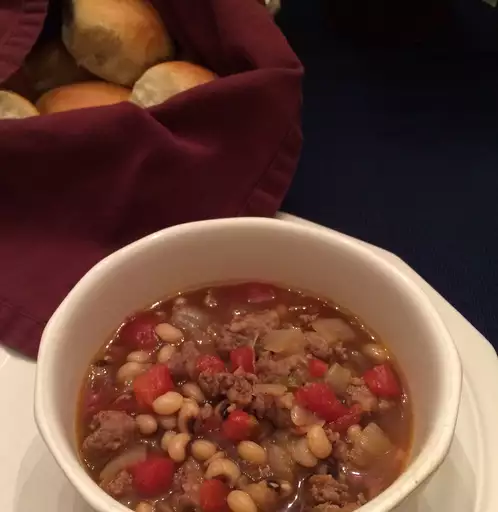

Black Eyed Peas

Description
A great New Year meal. Perfect on a cold winter night. Great comfort food. Serve with corn bread
Ingredients
- 1 pound bulk pork sausage
- 1 pound ground beef
- 1 large onion, diced
- 4 cups water
- 3 (15 ounce) cans black-eyed peas, drained
- 1 (28 ounce) can diced tomatoes with green chile peppers (such as RO*TEL), undrained
- 1 teaspoon Worcestershire sauce
- 3/4 teaspoon garlic salt
- 1/2 teaspoon salt
- 1 (4 ounce) can chopped green chilles
- 4 teaspoons molasses
- 4 beef bouillon cubes
- 1/4 teaspoon ground black pepper
- 1/4 teaspoon ground cumin
steps
- Step 1: In a large dutch oven, cook and stir the pork sausage and ground beef with the onion over medium heat until the meat is no longer pink, 10 to 12 minutes; drain off excess fat. pour in the water, and stir in black-eyed peas, diced tomatoes, tomatoes with green chiles, Worcestershire sauce, garlic salt, salt, canned green chiles, molasses, beef bouillion cubes, black pepper, and cumin until thoroughly mixed.
- Step 2: Bring the soup to a boil, reduce heat to a simmer, cover, and simmer for 45 minutes.
Return To Main Page